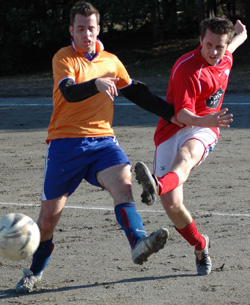
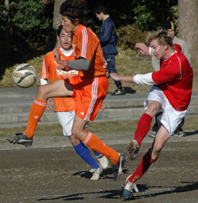
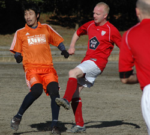
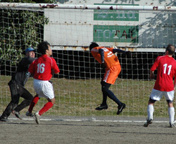
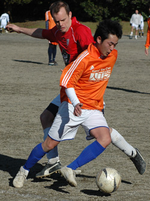

|
Oi Dirty, Saturday 10th January
Pablo Pomares`s infant son has had trouble sleeping. Luckily for him his father knows from experience one place in Tokyo where the urge to sleep is overwhelming – a Vagabonds match. The little critter was out like a light seconds after the kick off, missing both goals and all the action of a game against the Dutch Embassy that ended in a 1-1 stalemate.
I was a bit sleepy myself so to make up for memory lapses I’m going to load this report with those annoying soubriquets that bear no connection to the person but are sometimes effective at distracting you from the rubbish you are reading. You can take that as a warning if you like.
Conditions were good, if a bit windy, the Vagabonds were chatty and optimistic, won the toss and played with the wind first half.
The first few chances of the game came to the Vagabonds. Lyndsey “Jack Nicholson” Hughes making those rangy strides towards goal but shooting just wide when he should probably have been searching out James “the Helicopter” Musgrove and vice versa when James should probably have been doing the vice versa. Nevertheless I predict that the pair will start to do some damage up front after another game or two. I’m afraid I can’t be clearer than that. Paul “Fugu” Wadsworth did well to avoid being thwarted by his midfield partner Gary “the Dalai Lama” Quinn and was supported well be Graham “the Nod” Burt.

The first half workload was light for defenders Richard “the Sun Bear” Straughan and Steve “Marmalade” Glenn, except for one goalmouth clearance. Nao “Molotov” Kaneko allowed nothing past him at left back and sprung a number of attacks down the left wing.
The first goal, on the stroke of halftime, came from a Lyndsey “Moscow Mule” Hughes throw near the left corner flag. A scuffle of feet on the sand, a puff of wind and a Mexican wave of grunts and the ball flew, untouched, towards the goal before a Dutch player got a glance on it to claim the o.g. Credit went to Simon “the Dustman” Sparkes for being the closest Vags player to the ball when it went in.
Second half Ian “the Ska” Warner remained faithful to his central midfielder’s philosophy of not straying out of the center circle. He stabilized the center and, from his pillbox, disabled Dutch attacks and sprayed balls out to the wings. Paul “the Satellite” Wadsworth orbited the center circle taking everything Ian missed.
The headwind made it hard going on the Vags, and the Dutch spent a while in our half. But the best they could do goalwise was to launch some shots from outside the box that were either saved or wide. All except one. After making a good diving save Taylor “Billy Joel” Mignon spilled the ball an agonizing few inches out of reach and a Dutch player nicked it back across the box. A couple of side to sides and the ball was headed in for the equalizer.
A dicey hamstring kept Steve “Minder” Glenn in defense, where he was underemployed in this game but if fit, would have been a fruitful partner in midfield for Ian “Weetabix” Warner and Paul “Tomorrow” Wadsworth. The result might have been different. Simon “Wensleydale” Sparkes tussled on the right and Neil “the Mousetrap” Mochan on the left until he was felled by a torn muscle and had to leave the pitch.
Second half rotations put Phil “the Badger” Robertson up front with one of our other guys, and despite his ripe age and unfamiliarity with the rest of the Vagabonds – or perhaps because of these things, especially the second one – did very well until he did a favorite trick of Vagabonds debutants– pulled a muscle that will probably put him out for a year and cost him a fortune in medical care. A spell of sweeping moves down the right starting with Masahiro “the chef” Ochiya led to corners and a great chance for Simon “the Sophomore” Sparkes to put us ahead but he lifted the ball over the bar.
But the best move of the game came in the dying minutes which is typically the time when Ian “the Headline Grabber” Warner does something exceptional. In this case a move from midfield he started, but instead of taking out his field glasses to observe the outcome, took off in hot pursuit of a goal.
Lyndsey “the Barnacle” Hughes on the left took the ball twenty yards in about six strides then squared it back to him perfectly. But James “the Blackberry Bush” Musgrove streaked in from the right wing, Ian hesitated thinking Muzzy wanted it – he didn't – and finally send the late shot just wide to the side netting. As Ian sat on the sand in disbelief the Dutch stormed at us but Nao “the Tomohawk” Kaneko made the important tackle at left back and made sure the game ended 1-1.
Ged “Spielberg” O Connell looked on from the sideline, salivating. He will be back for next week’s cup game against Mauritizio, cracked ribs or not. A note to Mauritzio: be on guard. We expect to have a full squad with Ken “the Crow” Tsurumi, Adrian “Barry Norman” Thomas, Kev “the Obstacle Course” Gray, Wayne “the Starfish” Baxter, Chris “Steve Cram” Southam, Ollie “the Goat” Cox etc. etc. etc. and all without soubriquets hopefully.
Report by Dr Gary Quinn MD. OBE, CSE
|